Forex Market Foundation 2 — Fixed vs Floating Regimes
How a currency's exchange-rate regime — free-floating, managed, or pegged — decides where the volatility (and therefore the tradeable opportunity) actually lives.
The history of money since Bretton Woods is really a map of where volatility hides. Pegs are dead flat until they break; floating and 'dirty' floats are where a trader's opportunity set lives — and this lesson builds that map, from the 1971 Nixon Shock to the exact peg bands and the 23 tradeable currencies / 506 crosses that fall out of it.
The gist
- Currency trading IS applied macroeconomics — the masterclass is 'as much a lesson in macroeconomics and international trade as it is about trading and portfolio management,' and regimes are where that macro maps onto volatility.
- Bretton Woods (44 nations, 1 July–22 July 1944, New Hampshire) created the IMF and the IBRD and an adjustable-peg 'gold exchange standard': USD pegged to gold, other currencies pegged to USD, giving the USD 'intrinsic value' and making it the world's reserve currency.
- The system strained as Japan and West Germany recovered: from 1950–1969 the US share of world output fell from 35% to 27% and the US ran a deficit; financing the Vietnam War meant printing USD faster than gold was mined, making the USD/gold value questionable.
- The Nixon Shock (weekend of Friday 13 August 1971; address Sunday 15 August 1971) suspended USD–gold convertibility. In the following week USD fell 2.5% vs CHF, 5% vs GBP, 10% vs JPY, and 45% vs JPY over the following year. By March 1973 all majors floated freely and the DXY was founded.
- The modern DXY is 6 currencies weighted against the USD: EUR 57.6%, JPY 13.6%, GBP 11.9%, CAD 9.1%, SEK 4.2%, CHF 3.6%.
- The Balance of Payments identity: BOP = CAB + CA + FA + BI, where CAB = (X−I) + NI + NCT. A surplus = net creditor (Japan largest, China second); a deficit = net debtor (US largest at −$18trln, UK second at −$10trln).
- Exact peg bands to memorise: DKK EUR/DKK 7.46038 ±2.2500% (LB 7.29252 / UB 7.62824); HKD USD/HKD band 7.75000–7.85000; CNH crawling band CPR ±2.0000% off a daily 9.15am Beijing fix; Gulf conventional pegs SAR 3.75, AED 3.6725, BHD 0.376, OMR 0.3845, QAR 3.64 ±0.0412%.
- The tradeable thesis: volatility lives in the floats and dirty/managed floats; pegs trade in extremely tight ranges and are non-tradeable UNTIL they break — GBP's 1992 ERM exit is the classic break-the-peg opportunity (Soros).
- Segmenting the universe gives 23 total opportunities (Ex-Commodity Float Majors 5, Ex-Commodity Float Minors 4, Commodity Float Majors 3, Commodity Float Minors 8, Ex-Commodity Pegged 3), which cross into a maximum of 506 pairs — and the more liquid the pair, the LESS volatility, the opposite of how retail traders think.
Why regimes? Macro is the whole game
- The objective set from Video 1 conflicts with a trader's own goal — we seek volatility, so we need currencies that MOVE over any time horizon.
- Understanding fixed vs floating regimes, plus their history and pros/cons, is really an education in 'all things macroeconomics' — which is what currency trading comes down to.
- Studying regimes shows us the underpinnings of WHERE volatility may lie, feeding the next step: defining a tradeable opportunity set.
Anton frames the whole lesson as dual-purpose: it teaches macroeconomics by default while it maps the exact places a trader should expect movement.
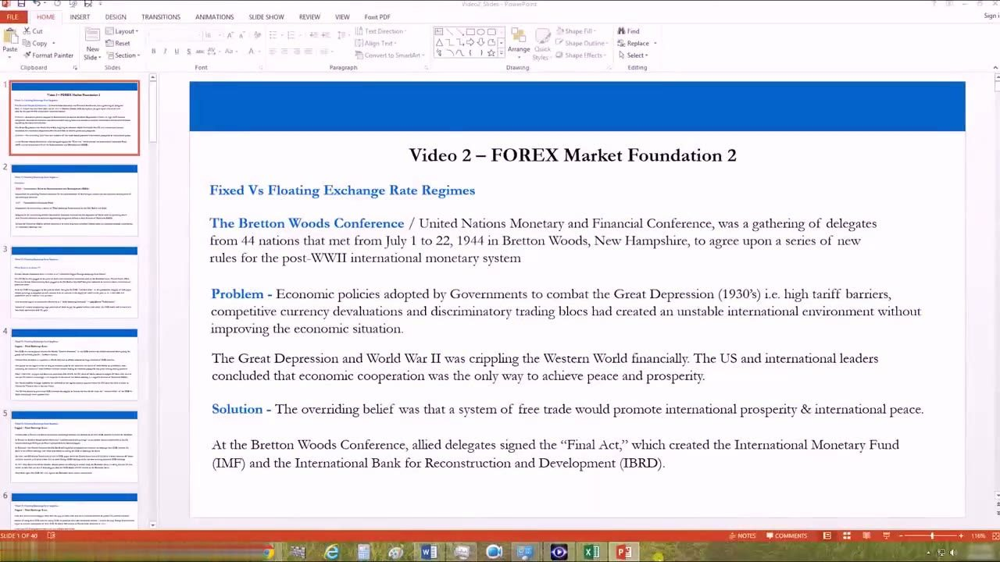
Bretton Woods 1944 — the IMF and the IBRD
- 44 nations met 1 July–22 July 1944 at Bretton Woods, New Hampshire, to write new rules for the post-WWII international monetary system.
- Problem: Great Depression (1930s) protectionism — high tariff barriers, competitive currency devaluations, discriminatory trading blocs — had created an unstable world without fixing the economy.
- Solution / belief: free trade would promote international prosperity and peace. Delegates signed the 'Final Act', creating the International Monetary Fund (IMF) and the International Bank for Reconstruction and Development (IBRD).
The founding logic was that deeper economic cooperation, not protectionism, was the only route to prosperity and peace after the Depression and the war.
The outcome — a USD–gold anchored fixed-rate system
- IBRD: financial assistance for reconstruction of war-ravaged nations and development of less-developed countries.
- IMF: maintain a system of fixed exchange rates centred on the US dollar and gold, keep orderly monetary relations, and provide short-term assistance to countries with temporary Balance of Payments (BOP) deficits.
- The mechanism was an 'adjustable pegged' system / 'gold exchange standard': USD pegged to gold; the Deutsche Mark, French Franc, Swiss Franc and British Pound pegged in turn to the USD.
Pegging the dollar to gold gave paper money 'intrinsic value' — new money could only grow at roughly the pace of newly mined gold (e.g. a 1.5% gold-supply rise = a 1.5% note rise), taking money-printing out of central authorities' hands.
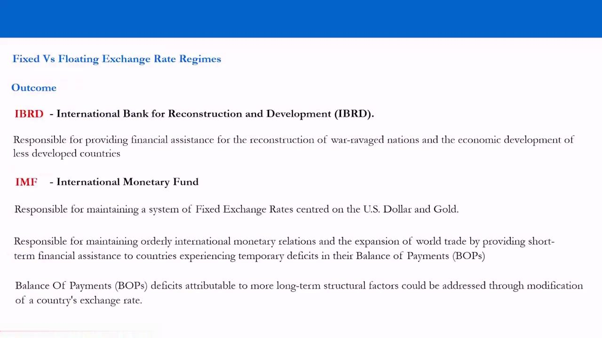
The reserve currency and the cracks
- The USD became the world's reserve currency — the default for global trade — so all trading nations had to hold large USD reserves.
- Upside: if everyone plays by the rules, terms of trade are predictable, boosting trade, prosperity and peace among partners.
- 1950–1969: as Japan and Germany recovered, the US share of world output fell from 35% to 27%, the US turned net importer, and ran a negative BOP; financing the Vietnam War forced the US to print USD faster than gold could be mined.
The regime worked while the US played by the rules — but a structural deficit plus war financing made the dollar's convertibility promise increasingly hollow. France called it America's 'exorbitant privilege'.
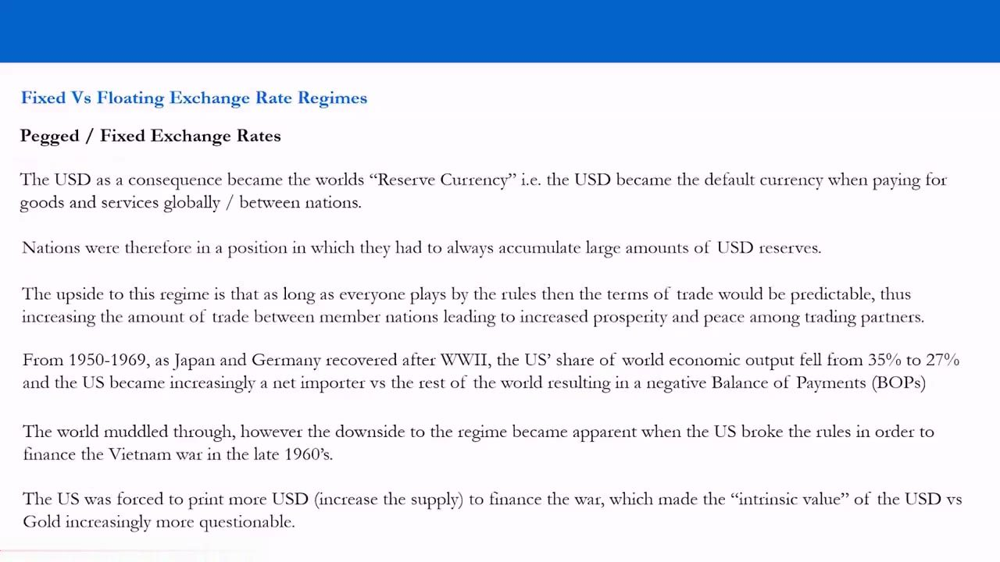
The Nixon Shock, 1971
- France (de Gaulle, 1965) and others moved to redeem USD reserves for gold; Switzerland and France both redeemed in 1971. West Germany refused to revalue the Deutsche Mark and the USD fell ~7.5% against it.
- At the time US unemployment was 6.1% and inflation 5.85%. On the weekend of Friday 13 August 1971, Nixon — advised by Treasury Secretary John Connally — suspended the convertibility of USD into gold.
- Stated intent was to 'protect' and 'stabilise' the dollar against speculators — political speak for a DEVALUATION to cheapen US exports, raise import prices and create jobs. It started a trade war / currency war.
Anton's key lesson for traders: when things go wrong, governments and central banks use political language ('stabilise', 'protect') to defend untenable positions — learn to read the euphemism.
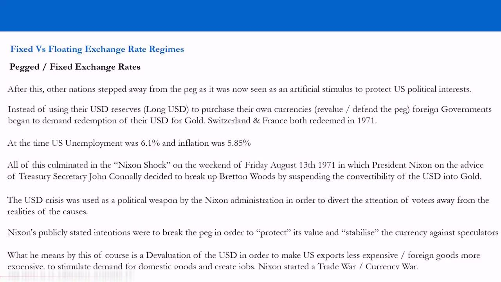
Nixon's address, the aftermath, and the birth of the DXY
- Nixon's televised address was delivered Sunday 15 August 1971 before markets opened; he also imposed a temporary 10% import tax and blamed 'international money speculators' — the 'beggar-thy-neighbour' play.
- Politically a success; economically, in the week following the USD fell 2.5% vs CHF, 5% vs GBP, 10% vs JPY — and 45% against the yen over the following year.
- By March 1973 all majors floated freely; IMF members may now choose any arrangement except pegging to gold. The USD Index (DXY) was founded in March 1973 as a 6-currency basket: EUR 57.6%, JPY 13.6%, GBP 11.9%, CAD 9.1%, SEK 4.2%, CHF 3.6%.
The collapse of Bretton Woods is literally the birth of the modern floating-rate world and the DXY — the reference index every dollar view is expressed against.
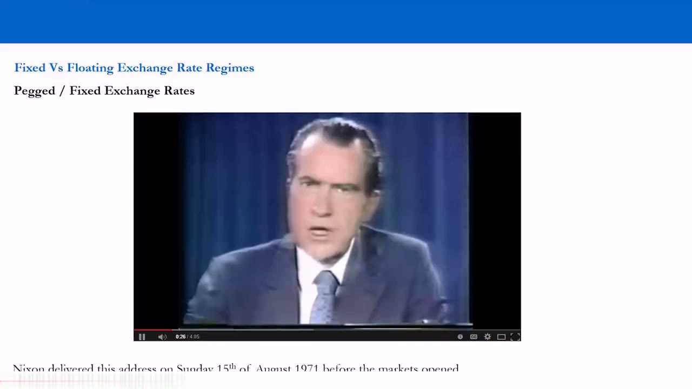
Floating rates: fiat money and free market forces
- Floating regimes are backed by nothing like gold; the modern monetary system assigns no special role to gold at all. The end of Bretton Woods ended 'representative money' (paper with a claim on a commodity) in favour of 'fiat money'.
- Fiat money derives value from government regulation/law: it is legal tender, only the government/central bank may print it, and it has no intrinsic value.
- A floating rate is SUPPOSED to be set by free-market demand and supply — but war, competitiveness, crises and high government debt lead to intervention and mismanagement. The Fed, ECB and BOJ are not obliged to tie their currencies to anything.
Fiat rests on trust — society must have faith in the government and central bank to manage GDP, inflation, employment and the BOP, and in the legal system that makes it tender.
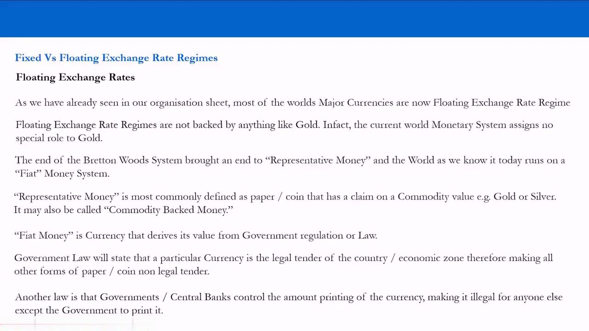
Managed floats and 'dirty' floating
- A managed float is a floating regime with active government/central-bank intervention — 'gradual adjustments' to manipulate the currency's value relative to others.
- The stated objective is 'stabilisation' to enable trade; if the market loses faith, liquidity dries up, volatility spikes and a self-fulfilling confidence crisis can follow.
- When a government/central bank manipulates a float to the disadvantage of other countries, it is termed 'dirty floating' — most so-called free floats are, in reality, managed/dirty floats.
This is the crucial nuance for a trader: the labels lie. 'Free float' currencies are frequently manipulated, so treat them as managed/dirty floats and expect intervention around politically unacceptable levels.
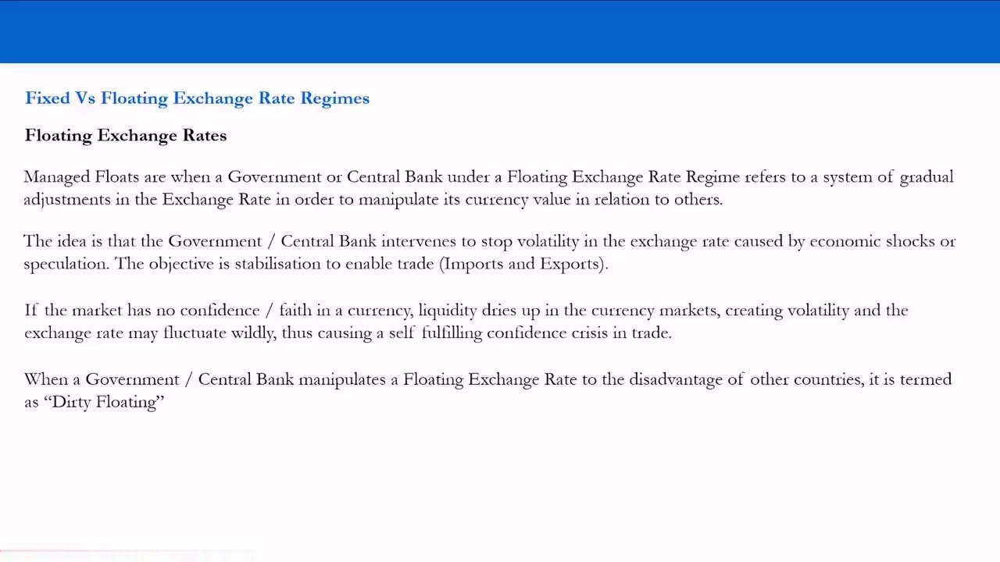
Advantages of floating (1): BOP self-adjustment
- Rule of thumb: the advantages of a floating regime are the disadvantages of a fixed regime, and vice versa — so we study floating and infer fixed.
- A high exchange rate makes imports cheaper than domestic goods; producers cut prices, demand for foreign goods and their currency falls, and the rate self-adjusts lower. Good example: cheaper raw-material inputs = higher margins / lower prices.
- Because you must SELL one currency to BUY another, a country's BOP should, in theory, self-adjust to a natural equilibrium via market forces.
The headline advantage of floating: countries that produce get rewarded and countries that don't get punished, automatically, without a central authority having to set the 'right' rate.
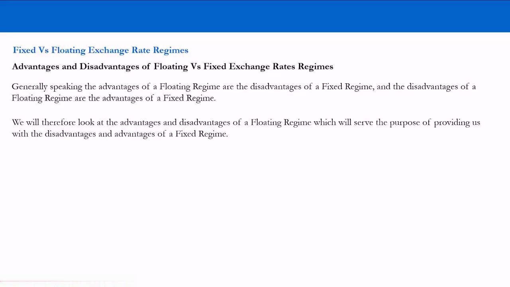
The Balance of Payments identity
- BOP = CAB + CA + FA + BI, where CA = Capital Account, FA = Financial Account, BI = Balancing Item.
- CAB = (X−I) + NI + NCT, where (X−I) = Exports minus Imports (goods & services), NI = Net Income from Abroad, NCT = Net Current Transfers.
- It is a debit/credit system that follows the flow of MONEY, not the flow of the good: an export is a credit (money in), an import is a debit (money out) — for both goods and services.
The lesson focuses on the (X−I) component for now; the trick is to think in invoicing terms — you send resources and receive money, or vice versa — and always follow where the money goes.
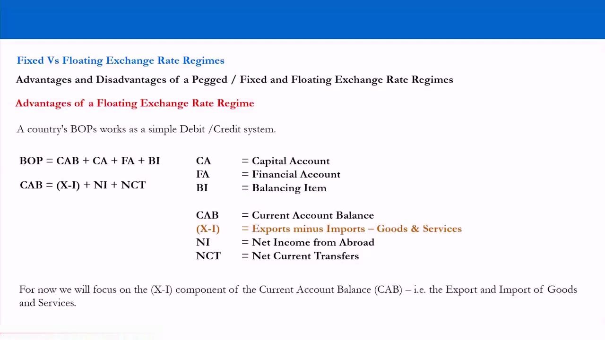
Trade surplus vs deficit — creditors and debtors
- Worked example: imports $750bln, exports $1 trillion → a +$250 billion BOP / trade surplus → a net-CREDITOR economy that saves more than it consumes; Japan is the largest net creditor, China second.
- Reverse it: imports $1 trillion, exports $750 billion → a −$250 billion trade deficit → a net-DEBTOR economy; the US is the largest net debtor at −$18trln, the UK second at −$10trln.
- A deficit is less favourable but not necessarily bad — the NI and NCT components, or a positive Capital + Financial Account, can offset an (X−I) deficit; think again in invoicing/loan terms.
A surplus means you are owed money in your own currency; a deficit means you owe money in internationally accepted currencies. This creditor/debtor lens is a primary driver of exchange rates.
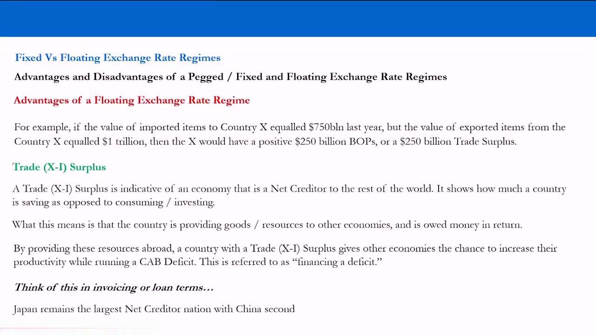
Advantages of floating (2–4): flexibility, policy focus, no commitment
- Self-adjustment is the headline advantage; its mirror is the main DISADVANTAGE of a fixed regime — the currency can't reach the market-clearing rate, so large unwanted deficits can build (as under Bretton Woods).
- Flexibility: a floater has no rulebook, so authorities can intervene whenever they want ('stabilise' is the preferred rhetoric over 'volatility'/'speculation'). Joke: 'Is Janet Yellen a dirty floater?' — the Fed manipulates the USD up and down.
- Monetary-policy focus + no long-term commitment: a float lets authorities focus on competitiveness (infrastructure, production, jobs, price stability) rather than defending a rate, and avoids surrendering sovereignty — the Eurozone PIIGS (Portugal, Italy, Ireland, Greece, Spain) can't depreciate to compete and are the counter-example.
Under a float the market becomes the political scorecard — it punishes bad central-bank behaviour and rewards good — whereas a fixed peg locks you in with 'no turning back' and can cripple a mismatched economy.
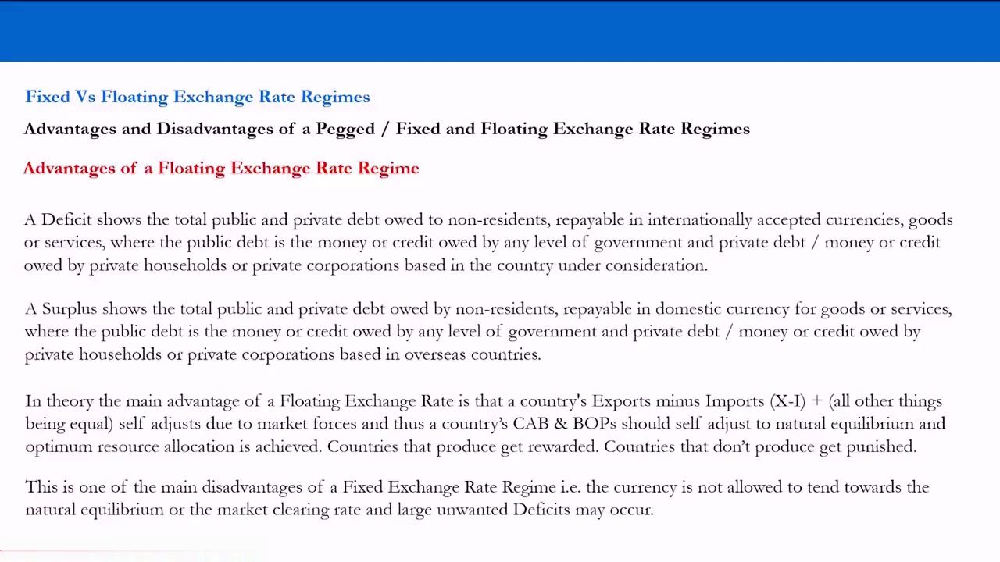
Disadvantages of floating (1): volatility & speculation — GBP/ERM 1992
- Fixed regimes give importers certainty over costs and exporters certainty over revenue/profit, which is argued to encourage investment and trade — though it can also breed monopolies and hinder competitiveness.
- So float volatility is cast as a disadvantage — yet importers and exporters can hedge their currency exposure 'forward', and fixed regimes ALSO invite speculation.
- Speculation on FX reserves: a fixed regime must hold reserves to defend the lower band. In 1992 George Soros worked out that the UK's reserves were finite, sold more GBP than the Bank of England could buy — the pound collapsed and Britain exited the ERM.
The GBP/ERM 1992 break is the archetype for the tradeable thesis: a peg is calm until reserves run out, and the break is precisely the volatility a trader wants.
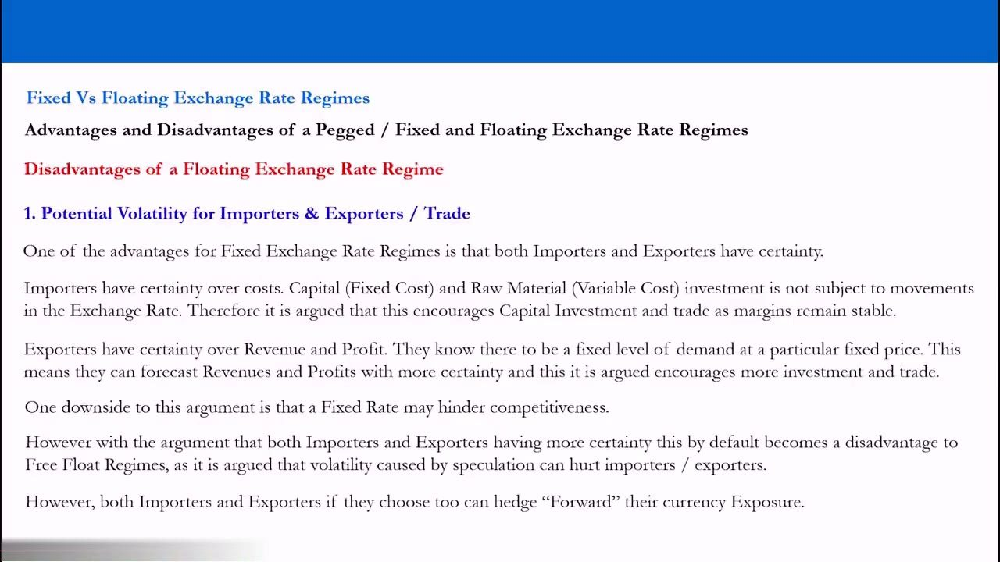
Disadvantages of floating (2–3): exogenous shocks & lost sovereignty (QE)
- Exogenous shocks cut both ways: for a net importer a sharp rate RISE makes imports cheaper (deficit out of control) while a FALL makes inputs expensive (growth slows); for a net exporter a RISE cheapens the surplus (deflation) while a FALL over-stimulates growth (inflation).
- The flexibility to dirty-float is itself a disadvantage: an open mandate to buy/sell reserves and move interest rates and money supply hands currency sovereignty to an unelected body — a possible threat to democracy.
- Example: the Fed balance sheet grew from $1trln (2009) to $4trln+ (2014) via QE, buying government bonds and shifting debt from the private sector onto the central bank — fuelling the conspiracy theory of a 'Fed agenda' to control America.
This is Anton's modern hook: QE is backdoor intervention. The same dirty-float flexibility that helps absorb shocks can quietly transfer control of a nation's money to appointed committees.
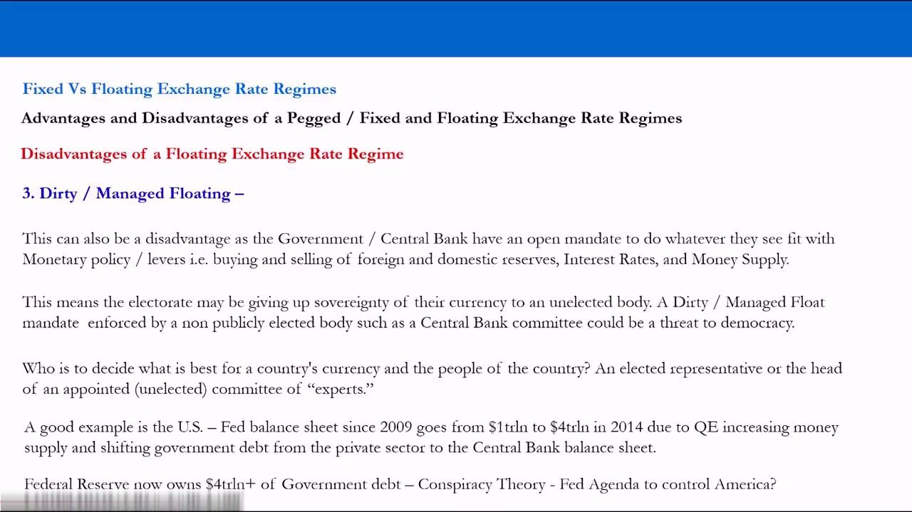
How the pegs actually work — the peg spectrum and exact bands
- Ex-Commodity Pegged: DKK EUR/DKK peg 7.46038, ±2.2500%, LB 7.29252 / UB 7.62824 (a 'managed float' pegged to the euro); HKD USD/HKD peg ~7.8 with band 7.75000–7.85000 ($1 buys HKD 7.75 = sell HKD/buy USD; $1 buys HKD 7.85 = buy HKD/sell USD).
- Commodity Pegged (Gulf, conventional pegs, bands not disclosed): SAR 3.75, AED 3.6725, BHD 0.376, OMR 0.3845 (very tight, little volatility); QAR 3.64 ±0.0412% (LB 3.6415 / UB 3.6385).
- Undisclosed managed baskets: SGD crawls against an undisclosed NEER; KWD pegs to an undisclosed world-currency basket; CNH is a crawling band / managed float around a daily CPR fix at 9.15am Beijing time, ±2.0000% (CPR×(1−2%) to CPR×(1+2%)), with bands and bandwidth that can be managed.
Learn the pegs in your own time from the qualitative notes: a defended band means near-zero day-to-day, week-to-week, month-to-month movement — so a peg makes no consistent money for a trader UNTIL it breaks.
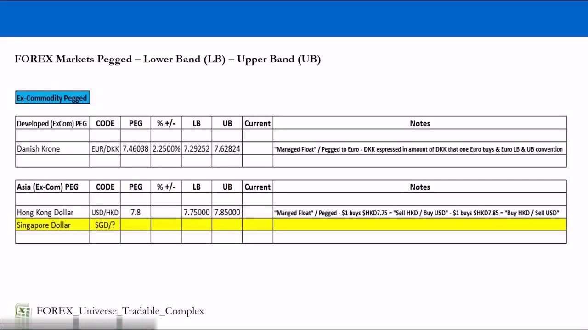
The tradeable complex — floats are where the volatility lives
- Floating currencies are split into Ex-Commodity Floating (e.g. USD, EUR, JPY, GBP, CHF, SEK; EMEA CZK/HUF/PLN; Asia KRW/THB/etc.) and Commodity Floating (developed AUD/NZD/CAD/NOK; plus EMEA, Asian and LATAM commodity floats).
- Note the honest labelling: the 'developed floats' (USD, EUR, JPY, GBP) carry the tag 'regular interventions through backdoor (QE)… Volatile Managed Float' — free in name, managed in practice.
- We keep the fixed regimes on the radar but set them aside: they trade in extremely tight ranges over 1-day / 1-week / 1-month / 3-month / even 1-year horizons, so we don't sit watching them do nothing.
This is the operational conclusion of the whole history lesson: our real opportunities as traders are in the floating and managed-float regimes, because that is where consistent volatility actually exists.
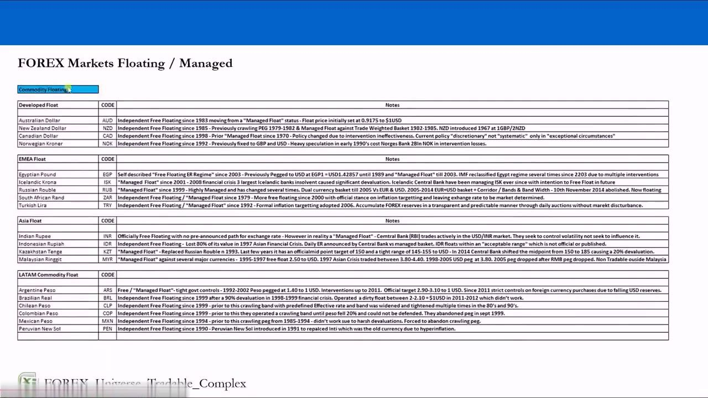
Tradable vs non-tradable segmentation
- Tradable = available on most decent brokerage platforms — as CFDs (UK, Europe, Asia-Pac) or futures (US & Canada). It spans Ex-Commodity Pegged (DKK, HKD, SGD), Ex-Commodity Floating and Commodity Floating.
- Non-tradable = generally unavailable on retail platforms — e.g. ILS, RON, UAH, KRW, PHP, TWD, THB, VND, EGP, ISK, IDR, KZT, MYR, ARS, CLP, COP and the Gulf commodity pegs + CNH.
- The point is objectivity: define assets by volatility, opportunity, risk AND availability — a retail trader realistically can't take a position in, say, the Egyptian pound.
A currency has to be both volatile AND actually tradeable on your platform to enter the universe — this filter turns the macro map into a practical, dealable opportunity set.
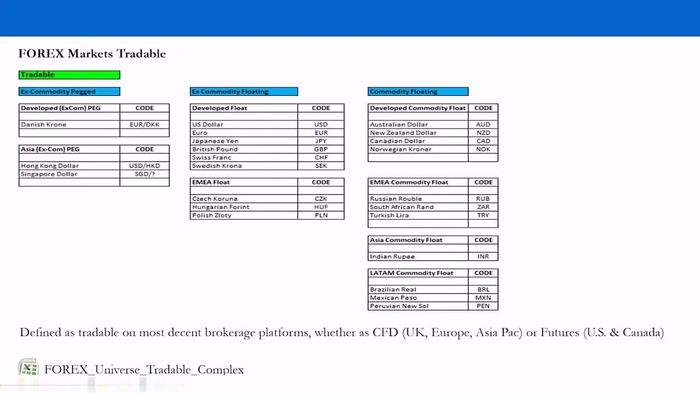
23 opportunities, 506 crosses, and liquidity vs volatility
- Final tally: Ex-Commodity Float Majors 5, Ex-Commodity Float Minors 4, Commodity Float Majors 3, Commodity Float Minors 8, Ex-Commodity Pegged 3 → Total Opportunities 23 (gross/net ~20 given the pegged debate).
- All 23 can be traded against each other (e.g. NOK not just vs USD but vs AUD), giving a maximum opportunity set of 506 currency pairs.
- Counter-intuitive core rule: the MORE liquid the pair, the LESS likely volatility. Liquid crosses (majors and major crosses) mean less risk for the broker, so retail traders over-leverage to chase volatility that may not exist — which is why over 90% of retail traders lose.
The big profits often sit in currencies you wouldn't expect — the less-liquid crosses carry the real volatility. Risk can be controlled; volatility cannot — you can only choose to trade the volatility that genuinely exists, at lower exposure, instead of leveraging 100x into liquid pairs that barely move.
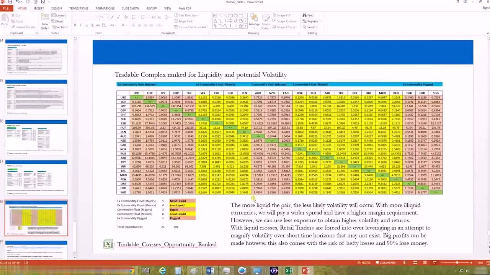
Recap — a macro foundation and a ranked tradeable universe
- Objective: give retail forex traders a systematic approach to predicting currency-pair moves the way professionals and hedge funds do.
- We organised the market into 4 groups (Ex-Commodity Floating, Ex-Commodity Pegged, Commodity Floating, Commodity Pegged), then segmented into Float Majors/Minors + Ex-Commodity Pegged, ranked by potential volatility.
- Next up: calculate ACTUAL volatility with statistical analysis (with Christopher Quill) and study how commodities drive currency pairs — but first, keep building the foundation of how forex markets work.
By understanding fixed vs floating regimes and their history, we have both absorbed real macroeconomics and produced a ranked, tradeable universe — the launchpad for the systematic process that follows.
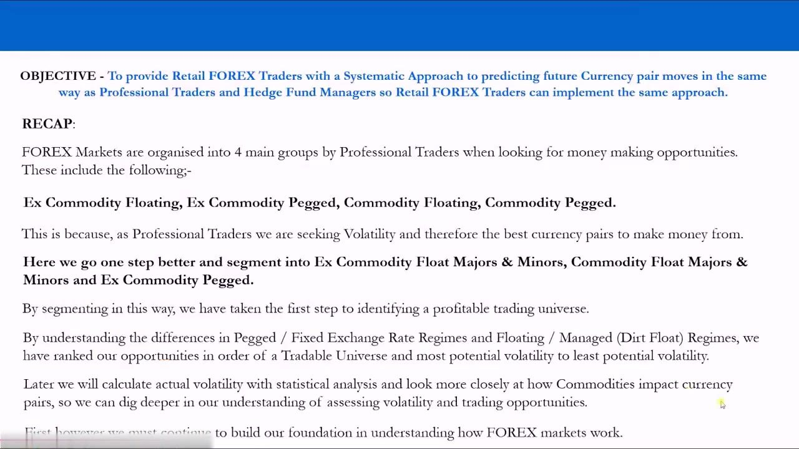
Glossary
- Bretton WoodsThe 1944 conference (44 nations, 1–22 July, New Hampshire) that created the IMF and IBRD and an adjustable USD–gold pegged system for the post-WWII monetary order.
- IMF / IBRDInternational Monetary Fund (maintained the fixed USD/gold system and financed short-term BOP deficits) and International Bank for Reconstruction and Development (financed post-war reconstruction and development).
- Gold exchange standardA regime where the USD was pegged to gold and other currencies pegged to the USD, so money supply could only grow roughly at the pace of newly mined gold.
- Reserve currencyThe default currency used to settle global trade (the USD after Bretton Woods), forcing all trading nations to hold large reserves of it.
- Nixon ShockThe suspension of USD–gold convertibility on the weekend of 13 August 1971 (address 15 August 1971), effectively a devaluation that ended Bretton Woods and started a currency war.
- DXYThe US Dollar Index, founded March 1973 — a 6-currency basket weighted against the USD: EUR 57.6%, JPY 13.6%, GBP 11.9%, CAD 9.1%, SEK 4.2%, CHF 3.6%.
- Fiat moneyCurrency that derives value from government law/regulation rather than a commodity claim; it is legal tender, has no intrinsic value, and only the state may print it.
- Representative moneyPaper or coin that holds a claim on a commodity value such as gold or silver ('commodity-backed money'); ended with Bretton Woods.
- Managed / dirty floatA nominally floating regime in which authorities intervene to adjust the currency; 'dirty' when done to the disadvantage of other countries. Most 'free floats' are managed floats in practice.
- Balance of Payments (BOP)BOP = CAB + CA + FA + BI — a debit/credit record of all money flows in and out of a country that follows the money, not the good.
- Current Account Balance (CAB)CAB = (X−I) + NI + NCT — exports minus imports of goods & services, plus net income from abroad and net current transfers.
- Net creditor / net debtorA trade surplus makes a country a net creditor owed money in its own currency (Japan largest, China second); a deficit makes it a net debtor owing internationally accepted currencies (US −$18trln, UK −$10trln).
- Peg band (LB/UB)The lower and upper bounds a pegged currency is defended within — e.g. DKK 7.46038 ±2.2500% (7.29252–7.62824) or HKD 7.75000–7.85000.
- CPR fix (CNH)China's daily Central Parity Rate set at 9.15am Beijing time, around which the onshore/offshore yuan is allowed a crawling ±2.0000% band whose width can be managed.
- ERM crisis (1992)The forced UK exit from the European Exchange Rate Mechanism when speculators (Soros) sold more GBP than the Bank of England's reserves could absorb — the classic 'peg break' opportunity.
- PIIGSPortugal, Italy, Ireland, Greece and Spain — Eurozone economies with output diverging from the region but locked into a common fixed currency, unable to depreciate to regain competitiveness.
- Quantitative easing (QE)A central bank increasing money supply by buying government bonds (US Fed balance sheet $1trln in 2009 → $4trln+ in 2014) — treated here as backdoor 'dirty float' intervention.
- Liquidity vs volatilityAnton's core rule that more liquid pairs tend to be LESS volatile — so chasing volatility in liquid majors forces retail traders to over-leverage into moves that may not exist.